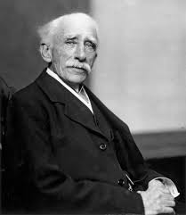

1879 – Invention of the Light Bulb
Thomas Edison revolutionized lighting by creating a practical electric light bulb.
Thomas Edison revolutionized lighting by creating a practical electric light bulb.
Wilhelm Röntgen discovered X-rays, paving the way for electronic imaging and diagnostics.
John Ambrose Fleming invents the vacuum tube diode, critical for early radios and computers.
Bell Labs invents the transistor, leading to compact, powerful electronics.
Jack Kilby creates the first IC, combining multiple components into one chip.
Intel 4004 launches, starting the personal computer era.
Apple releases the first iPhone, integrating computing and communication like never before.